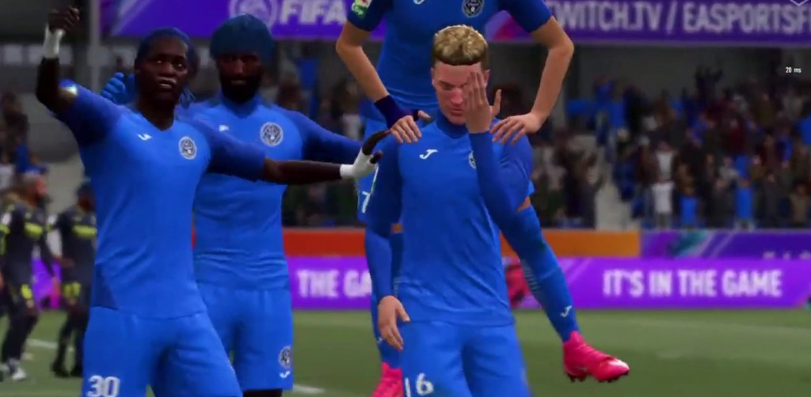

VICTORIE ÎMPOTRIVA CAMPIOANEI ÎN VPL ROMÂNIA
MARTIE 18, 2021
- Academica Clinceni eSports a avut o seară excelentă în VPL România (platforma PS). În primul meci al serii, echipa noastră a învins Dinamo. Prima repriză s-a încheiat 0-0. În partea secundă, însă, Academica Clinceni a punctat de două ori prin
golurile marcare de Mihnea Marici şi Radu Chişu. A urmat cel mai important test al actualului sezon intern – duelul cu VirtualTech. campioana în exerciţiu. Oaspeţii au fost cei care au deschis scorul în prima repriză. Jocul echipei noastre
a fost mai consistent după pauză. De fapt încă startul parţii secunde Academica şi-a arătat intenţiile Mihnea Marici a egalat foarte repede, şi tot el a punctat pentru golul victoriei.
- Până la finalul sezonul mai sunt şapte etape. În acest moment Academica Clinceni eSports se află pe poziţia a cincea (loc de Europa League), cu 42 de puncte, cu şanse mari să intre în Top 4, ceea ce ar însemna o nouă participare în Champions
League.